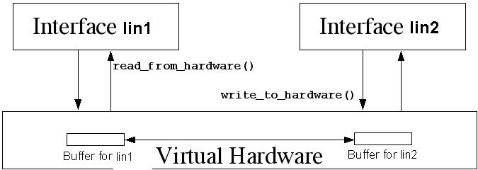

To write a pseudo network device.
A network device is consulted when packets have to be transfered from one host to another host. In this example we write two network interface modules by name lin1 and lin2 that will have IP addresses local0 (192.168.0.1) and local1 (192.168.1.2) respectively. lin1 belongs to a network 192.168.0.0; while lin2 belongs to network 192.168.1.0
To simulate network packet transfes we create a virtual hardware layer, over which the network interfaces work. The code for the hardware layer is in lin_net_device.c; and the code for network interfaces lin1 and lin2 is lin_net1.c and lin_net2.c.
A schematic diagram of the architecture is given below

The rule here is that every network interface should register itself with the virtual hardware
layer before it can transfer packets. After registration, writing data to the hardware is done
using write_to_hardware() function which is exported from lin_net_device.c.
To read from the hardware read_from_hardware() function is used.
In real network devices, the hardware generates an interrupt when a new packet of data is ready to be
read from the device. Network interfaces register the interrupt handler for this IRQ. This
interrupt handler then runs low level routines (like read_from_hardware()) to read
from the hardware.
In this example, while registering an interrupt function is sent as parameter. When the data is ready, the interrupt function is invoked by the virtual hardware layer
lin_net1.c, lin_net2.c and lin_net_device.c using gcc
linnet0 192.168.0.0 linnet1 192.168.1.0
192.168.0.1 local0 192.168.0.2 remote0 192.168.1.2 remote1 192.168.1.1 local1
# ping remote0
# ping remote1